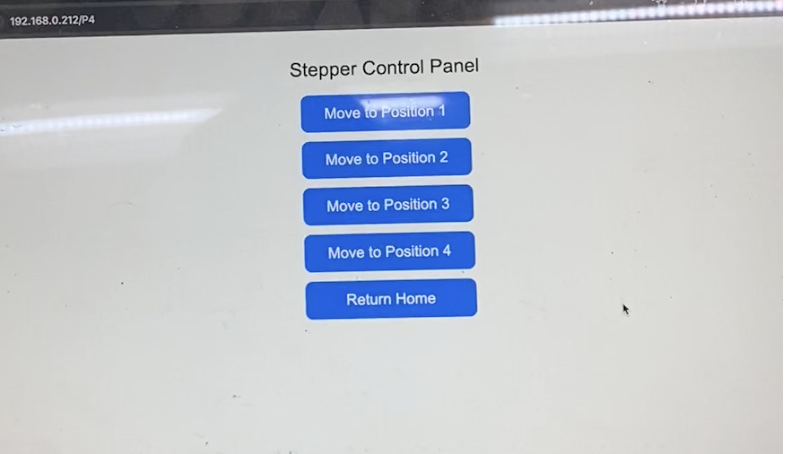

Integrated Project
Implementing a homing system and presetting stopping points for the robotic slider.
For this assignment, my goals were to update my robotic slider, build a reliable homing system, and allow the slider to stop accurately at predefined positions. I first revamped my slider system by CADing a larger sliding piece so I could mount a larger servo on it. I also rebuilt one of my slider mounts so that it could more securely mount my NEMA17 and could be adjusted to fit the breadboard I was using.
Homing System
Having just finished machine building week, the homing system with a limit switch was easy to implement, though I spent some time trying to get the circuit correct. I initially had the voltage on my limit switch pin floating even though I tried to use an input_pulldown pin. I then altered the circuit to directly ground the voltage on the pin and that seemed to work much better. The limit switch was attached to the side of the robot to keep a low profile.
Re-integrating with the Ultrasonic Sensors
Once I had homing working, I re-integrated the ultrasonic sensing function into the robotic slider. This worked more smoothly than with my MVP now that I had more experience with C++ class structure. The trick was to create bool logic that stopped the ultrasonic sensor from taking measurements when the robotic slider was moving. Otherwise, the rapid measurement taking would cause the stepper motor to stall.
Remote Control via Web Server
Once I had homing working, I moved on to building a web server to control my robot and have it move to specific points along the x axis of the slider. I built a simple web server using an example sketch on ArduinoIDE, specified a home position, and preset four points for the slider to move to. These preset points would represent the different trays of snacks.
Remote Control via Joystick
For fun, I decided to see if I could control the robotic slider with an analog joystick I found in the lab. I used ESP-NOW to communicate between two ESP32s, one connected to the joystick and another running my stepper motor. At first, the stepper motor would stall because it was recieving constant input from the joystick. I had to run a smoothing function on ArduinoIDE, with some help from the internet, to get the stepper to stop locking up. I used AccelStepper to keep the movement smooth, though this introduced some lag in the robotic slider's response to my joystick input, especially when changing directions.